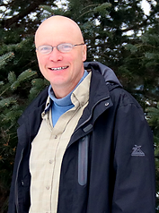

Dr. Edward Metcalf, DVM
Dr. Edward Metcalf is originally from Hayward, Wisconsin and earned his Doctor of Veterinary Medicine Degree from the University of Wisconsin Madison in 1995. After practicing in a mixed animal practice in Mondovi for four years, he moved back to Hayward to start his own large animal practice. In 2014 Dr. Metcalf added the business name, Leading Edge Veterinary Services. Dr. Metcalf practices on all large animals and his areas of interest are dairy herd health management and bovine reproduction. He resides east of Hayward on his family farm. He enjoys camping, hunting and spending time with his sons, Ross and Tom.